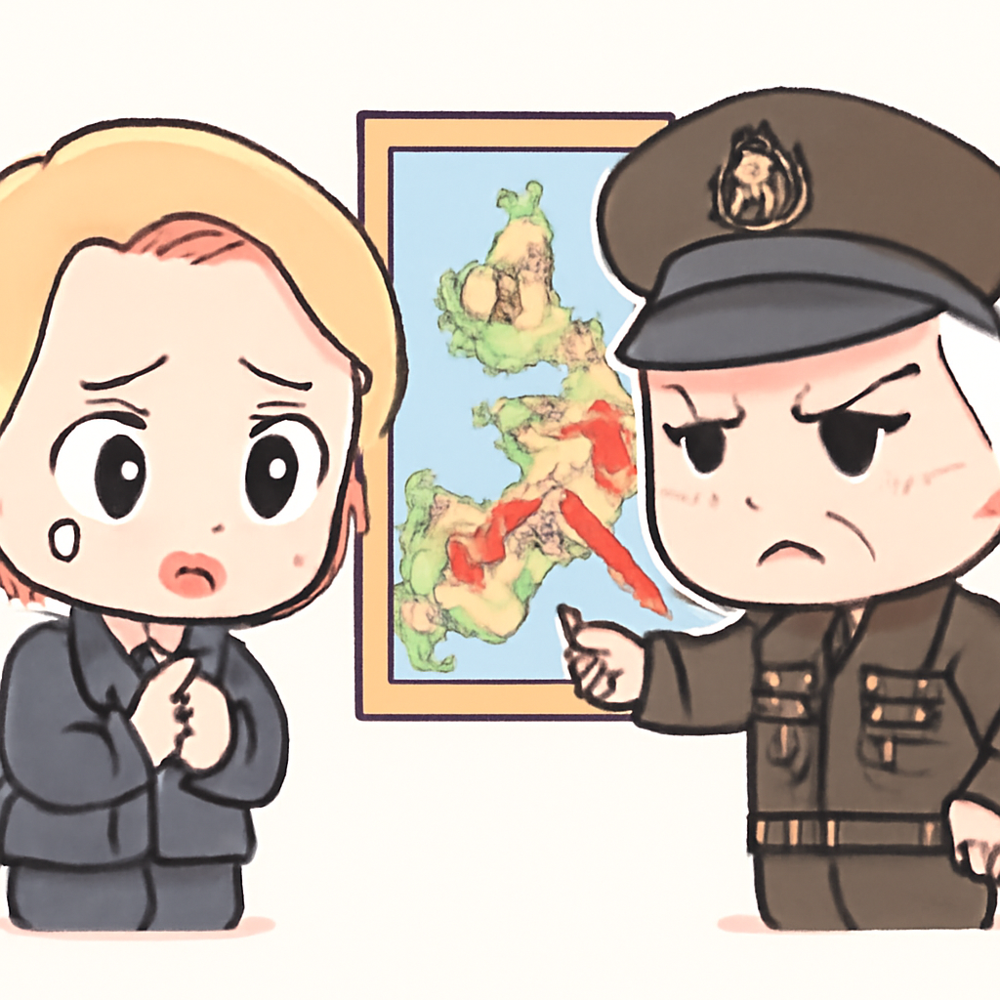
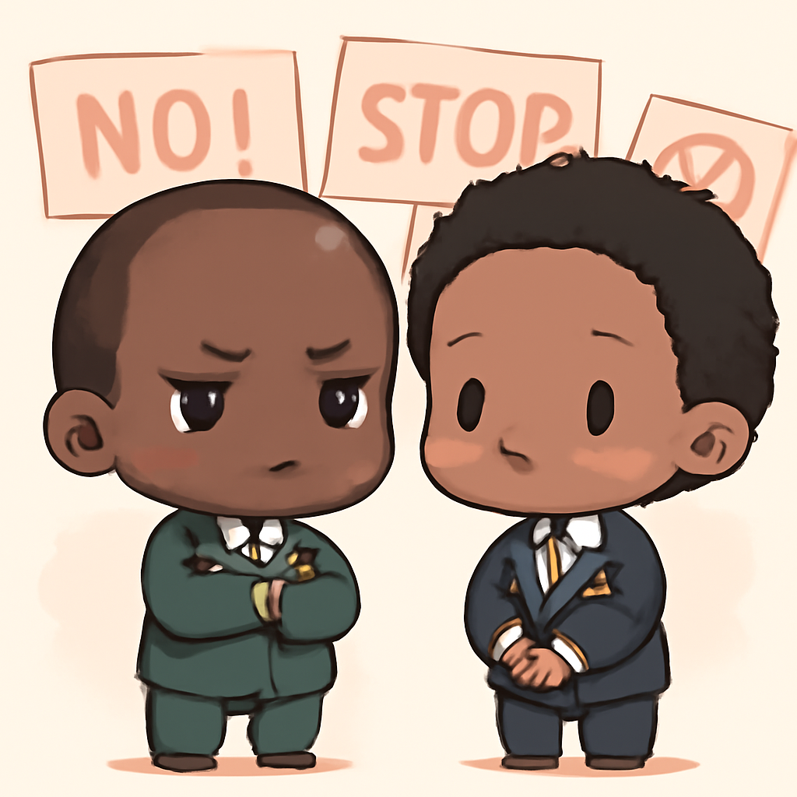

其一 · 烏克蘭基輔 · 俄烏衝突再度升溫
俄羅斯空襲烏克蘭，造成10人死亡
在烏克蘭基輔，俄羅斯軍隊進行空襲，目前已確認造成10人死亡，烏克蘭也回擊摧毀了數艘俄方油輪。這場衝突不僅讓當地民眾心驚膽戰，也讓國際關注到俄軍的行動是否會再度升級。希望這場戰鬥能早日結束，不然我們可能都要開始學習烏克蘭的語言了。
🔗 原始新聞 ↗
2026-05-04 · 以古觀今，以笑抗愁
俄羅斯空襲烏克蘭，造成10人死亡
在烏克蘭基輔，俄羅斯軍隊進行空襲，目前已確認造成10人死亡，烏克蘭也回擊摧毀了數艘俄方油輪。這場衝突不僅讓當地民眾心驚膽戰，也讓國際關注到俄軍的行動是否會再度升級。希望這場戰鬥能早日結束，不然我們可能都要開始學習烏克蘭的語言了。
🔗 原始新聞 ↗
美國共和黨人批評德國削減軍隊人數

德國柏林，兩位美國共和黨領袖對德國宣布削減5000名駐軍表示擔憂，認為這會發出錯誤信號，削弱對俄羅斯的威懾力。隨著地緣政治緊張加劇，這一決定可能對未來的國際安全局勢產生影響。希望德國能在軍事與外交之間找到更好的平衡，不然真的會成為國際舞台上的小丑。
🔗 原始新聞 ↗
伊朗聲稱美國已回應其和平提議
在伊朗德黑蘭，伊朗官員表示美國已對其最新的和平提議做出回應，雖然美方尚未正式確認。此消息引起國際關注，因為這可能影響到中東地區的穩定與和平進程。希望雙方能夠繼續對話，不然又要回到那個互相指責的老路了。
🔗 原始新聞 ↗
尼日利亞召見南非大使，抗議暴力事件

在尼日利亞拉各斯，因南非針對尼日利亞公民的暴力抗議活動，尼日利亞政府召見南非大使。這場抗議活動引發國際關注，因為它反映了兩國間的緊張關係。希望雙方能夠對話，讓這場外交危機不至於演變成地域衝突，否則可能會對整個非洲大陸的穩定造成威脅。
🔗 原始新聞 ↗
日本的AI微劇風靡，明星卻感到威脅
在日本東京，AI生成的微劇正迅速流行，儘管這讓觀眾眼前一亮，但許多明星卻對此感到不安，甚至威脅要採取法律行動。這不僅是技術的進步，也是娛樂產業的重大變革，未來的演藝圈可能會變得更像是一個科技競技場。希望這些明星別太緊張，畢竟，AI還是無法取代人類的魅力！
🔗 原始新聞 ↗